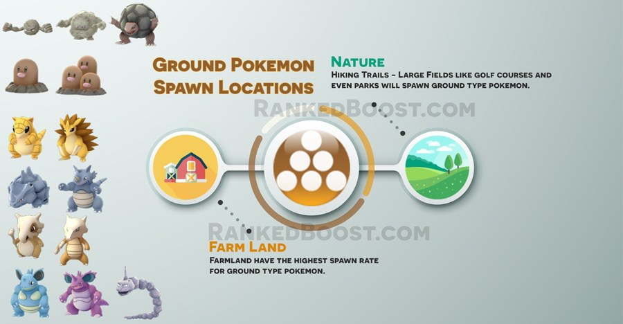

Where Do I Catch Ground Pokemon In Pokemon Go: Ground pokemon have similar spawn locations to rock pokemon. Locations such as Farmland have some of the highest spawn rate of ground pokemon.
How To Get Ground Type Pokemon Tips:
Where Do I Find Ground Pokemon? – ( Ground Pokemon Locations )
Confirmed Ground Pokemon Go Spawn Locations: Parks – Farmland – Woodland – Quarry – Golf Course
Unconfirmed Ground Pokemon Go Spawn Locations:
There is a Total of 14 Pokemon Go Ground Pokemon: Sandshrew, Sandslash, Diglett, Dugtrio, Geodude, Graveler, Golem, Onyx, Cubone, Marowak, Rhyhorn, Rhydon, Nidoqueen and Nidoking.
